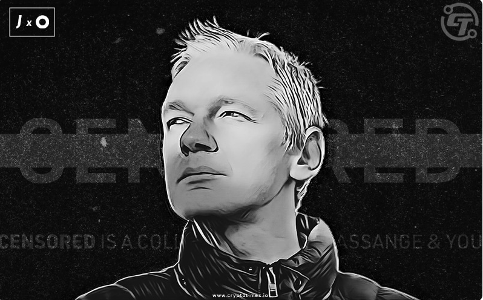
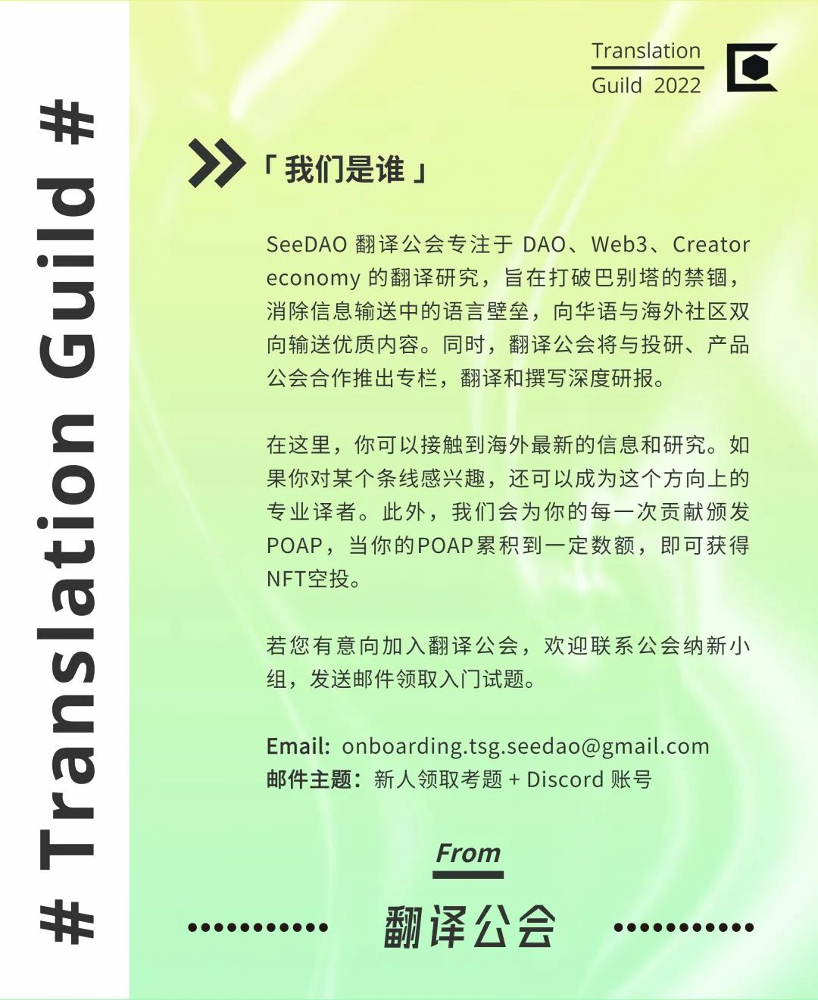

确实。很多人想得就这么简单。
但事情并非如此。在公开市场上，我们看到像 NBA Top Shot 和 头像类 (PFP) NFT 等数字收藏品（如 CryptoPunks 和 BAYC ）的价格高得惊人。而他们中的任何一个都不是真正意义上的艺术品或艺术。那么问题来了：究竟是什么让 NFT 变得价值连城？

一、稀缺等式
See DAO
无论是艺术品还是数字收藏品，有一个因素肯定会推高 NFT 的价格：稀缺性。那么 NFT 的稀缺性与猿猴小图片有什么关系？
为了回答这个问题，让我们先来上一节经济学入门课。跟着我看下去——我们会让这节课通俗易懂的。
经济学领域期望理解和解决的核心问题之一是：在一个资源有限的世界里，如何有效地应对人类近乎无限的欲望。简单地说，就是平衡供需。
一般来说（此处着重强调＂一般＂），供给和需求两股力量的相互作用会影响到一项指标，也是消费者最终会感知到的指标：价格。在某个市场中，即使一个商品的需求强劲，但如果它供给充足，那么在此市场中该商品的价格就会相对较低。
反之亦然。当对特定商品的需求远远超过供给时，它就会成为稀缺商品，在相应市场中就能获得更高的售价。

二、NFT 及其稀缺性
See DAO
NFT 可以非常昂贵（或很有价值，取决于你问谁），是因为它设法做到了不可能的事：将稀缺性引入全球数字市场。NFT 不仅仅意味着豪掷千金买一张图片——它也给了你所有权。
艺术性
Mark Rothko作品 图源：WikiART
简单地说，价格高是因为它是现存的同类画作中唯一的一幅，也因为它是由 20 世纪最杰出的艺术家之一创作的。
这就是为什么迄今为止我们所看到的最昂贵的 NFT 交易中，绝大多数都是独此一件的作品。就像 Rothko 的《橙色、红色和黄色》，这些特殊的 NFT 是同类作品中的唯一。又比如 Beeple 的 Everydays，该 NFT 系列在 2021 年售出近7000 万美元 ，这些作品也确实是独一无二的。Everydays 收录了 Beeple 超过 14 年创作的5,000 件独特作品，它们是这位数字艺术家以每天一首的方式努力创作的。
效用性
有时，NFT 拥有远超艺术品或收藏品的广泛应用范围，因此获得高价。归功于区块链交易内在的安全性，NFT 被广泛用作筹集资金的手段。
从我们目前见过的最昂贵的 NFT 交易之一可以中观察到这一点。2022 年初AssangeDAO 成功安排了数百万美元 的 Pak's Clock NFT 售卖活动，该交易（截至发稿时）是有史以来第二昂贵的 NFT 交易。

图源WikiArt
确切地说，该 NFT以 16,953 个 ETH 价格售出，当时价值约为 5,270 万美元。销售所得计划用于资助 WikiLeaks 创始人 Julian Assange 的法律辩护。在该例中，NFT 的效用——要用来做什么，是让它如此有价值和昂贵的原因。
永存性


原文作者：JEX EXMUNDO
译者：Queeny
校对：Roy
排版：SuanNai
图片来源：wikiart、Unsplash
SBT 和 DAO 中的人才管理
深耕一年，我从创作者经济中学到了哪些道理？
SeeDAO 第一季节点共识大会圆满落幕
